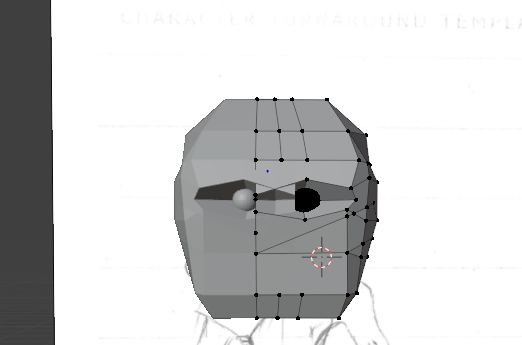

Task 2
Development
In making my low poly character's head, I focused on building its shape using basic shapes like
triangles and squares. I shaped each part, like the face and the smaller features such as the eyes and
mouth(covered by a mask). imagine it like making a character with digital clay, except the clay
is blocky. Although I didn't add colors, I still paid close attention to details to make sure the
character looked realistic and interesting while maintaining the low poly design.
